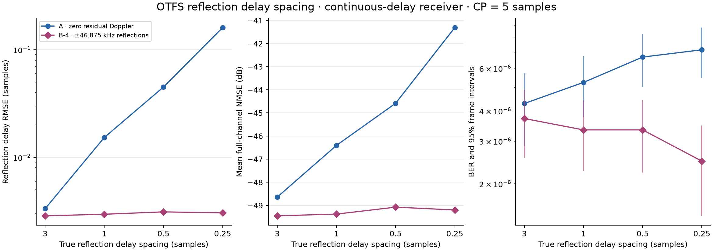

Physical delays는 [0, 5−gap, 5] samples다. Original W64, single pilot 4,096 Es, CP=5, Eb/N0=15 dB와 known P=3 continuous-delay receiver를 사용했다. 각 점은 214 frames 및 10,485,760 bits다. Gap=3 기준점은 이전 실험의 continuous-delay 결과에서 가져왔으며 첫 frame을 다시 계산해 확인했다.
A에서 gap을 3→0.25 sample로 줄이자 reflection delay RMSE는 0.003333→0.1606 samples, channel NMSE는 -48.64→-41.31 dB였다. B-4의 delay RMSE는 0.002861→0.003048 samples였다. 같은 delay 간격에서도 B-4의 두 reflection에는 서로 다른 Doppler가 있어 받는 pilot response를 구분할 단서가 있다.

| Condition | Gap (samples) | Reflection delay RMSE (samples) | Gap RMSE (samples) | 95th percentile of worst reflection error (samples) | Channel NMSE (dB) | Errors | BER | 95% BER interval | Optimizer non-success |
|---|---|---|---|---|---|---|---|---|---|
| A | 3 | 0.0033328 | 0.0049184 | 0.0088477 | -48.64 | 45 | 4.2915e-06 | [2.8709e-06, 5.7122e-06] | 0 |
| A | 1 | 0.015296 | 0.02088 | 0.029568 | -46.41 | 55 | 5.2452e-06 | [3.7604e-06, 6.73e-06] | 0 |
| A | 0.5 | 0.04502 | 0.062987 | 0.10647 | -44.58 | 70 | 6.6757e-06 | [5.0316e-06, 8.3198e-06] | 0 |
| A | 0.25 | 0.16061 | 0.11879 | 0.66312 | -41.31 | 75 | 7.1526e-06 | [5.4705e-06, 8.8346e-06] | 1 |
| B-4 | 3 | 0.0028609 | 0.00395 | 0.0077752 | -49.45 | 39 | 3.7193e-06 | [2.5665e-06, 4.8722e-06] | 0 |
| B-4 | 1 | 0.0029589 | 0.0043397 | 0.0077782 | -49.38 | 35 | 3.3379e-06 | [2.2575e-06, 4.4182e-06] | 0 |
| B-4 | 0.5 | 0.0031127 | 0.0044447 | 0.0087111 | -49.08 | 35 | 3.3379e-06 | [2.2255e-06, 4.4502e-06] | 0 |
| B-4 | 0.25 | 0.0030484 | 0.0042617 | 0.0083463 | -49.20 | 26 | 2.4796e-06 | [1.4736e-06, 3.4855e-06] | 0 |
Reflection delay RMSE는 frame마다 추정 delay 세 개를 오름차순으로 매칭하고, 두 reflection의 squared errors를 모아 계산했다. Gap RMSE는 두 추정 reflection 사이의 간격 오차다. 두 점수는 delay set의 복원을 평가하며 path별 Doppler 매칭을 점수에 포함하지 않는다. Operator NMSE는 full useful channel을 평가한다.
BER interval은 pointwise 95% frame-cluster interval이다. Optimizer non-success는 numerical status를 뜻하며, 표는 같은 receiver가 반환한 추정값으로 모든 frame을 집계한 결과다.